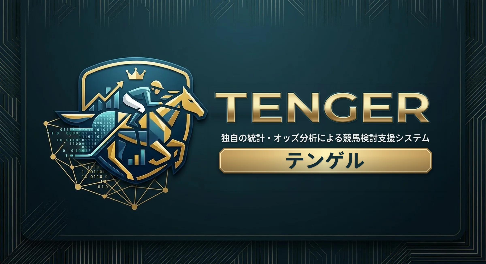
アプリの使い方
テンゲルⅢ 説明書
知りたい項目を押すと、その説明が出るよ。画面の写真に番号をつけて、順番に読めるようにしてあるよ。

アプリの使い方
知りたい項目を押すと、その説明が出るよ。画面の写真に番号をつけて、順番に読めるようにしてあるよ。
はじめに
オッズを入れるだけで、テンゲルⅢ（第13改訂版）の判定が全部出るアプリだよ。買った馬券の結果と収支も残せるよ。
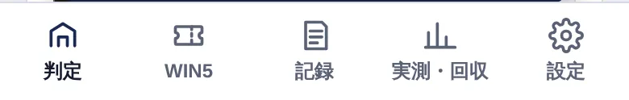
| タブ | できること |
|---|---|
| 判定 | レースのオッズを入れて判定する。買った結果もここで記録する |
| WIN5 | 5レースの1着ゾーンと買う馬を、予算の中で出す |
| 記録 | 保存したレースの一覧。直す・開く・書き出す |
| 実測・回収 | 自分の収支と、マザーデータの実測①〜⑦ |
| 設定 | 説明書・CM・買い目編集・マザーデータ・画像の読み取り・更新・バックアップ |
はじめに
Safariで開いて「ホーム画面に追加」するだけ。新しい版は、上に出るお知らせの「更新する」を押せばOK。
https://tmmd6z5fh8-creator.github.io/TENGEL/Safariの共有メニュー（イメージ）。下のほうにあるときは、上にスクロールして探してね。
一度開けば、電波がないところでも開いて判定できるよ。画像の読み取りと、新しい版の確認だけはネットが必要。
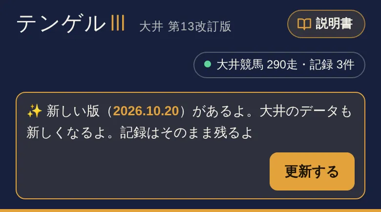
リンクを人に送っても大丈夫。記録・設定・APIキーは、それぞれのiPhoneの中だけにあるよ。
判定する（判定タブ）
R・距離・馬場・頭数・単勝オッズ・3連単1位の6つを入れると、その場で判定が出るよ。
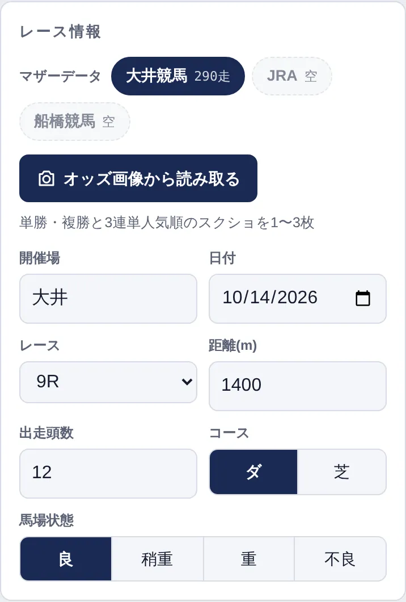
123456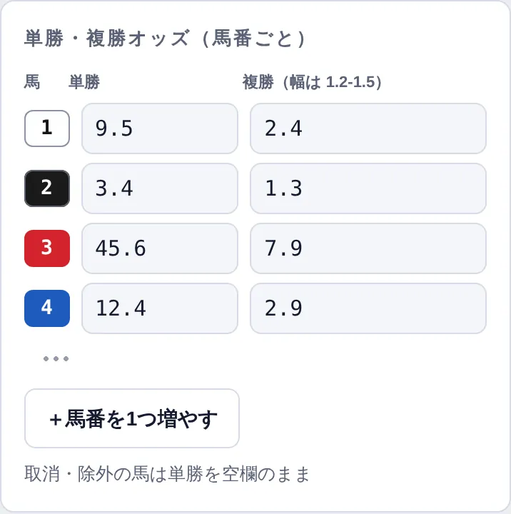
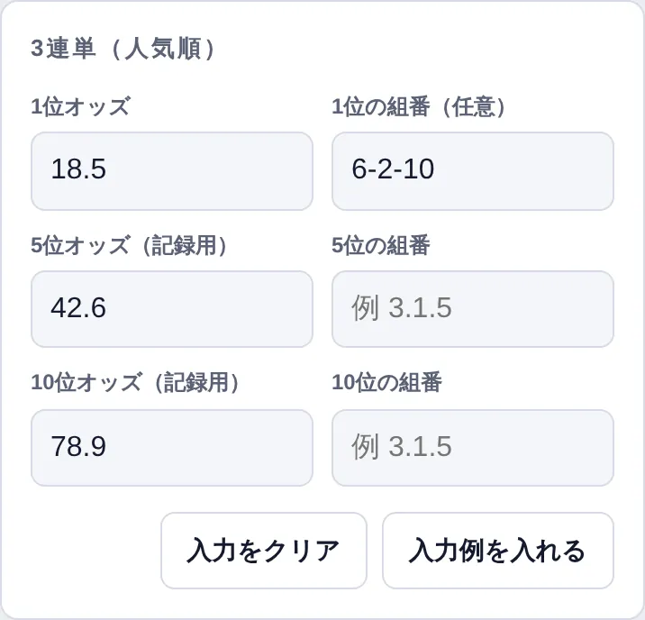
123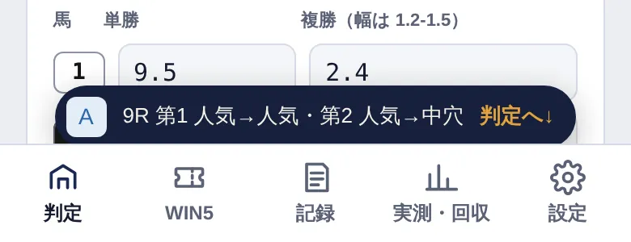
入力欄を見ている間は、下にこのバーが出るよ。押すと判定結果まで移動するよ。
使っているマザーデータと開催場が違うと【参考判定】になるよ（大井のデータなら、大井以外のレース）。開催場に合うマザーデータがあれば、切り替えるボタンが出るよ。
判定する（判定タブ）
スクショを1〜3枚選ぶだけで、入力欄が埋まるよ。使うにはAPIキーが1回だけ必要。
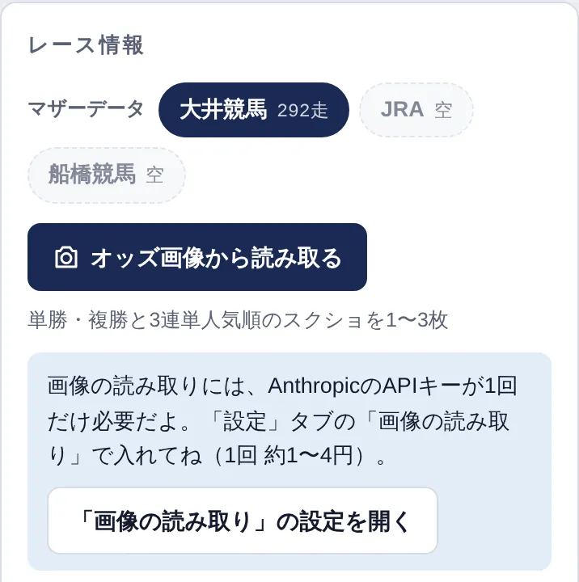
12開催場・日付・R・距離・コース・馬場・出走頭数・単勝・複勝・3連単の1位／5位／10位（組番も）
スクショは読み取りのためにAnthropicへ直接送られるよ。記録やほかのデータは送らないよ。キーの作り方は「画像の読み取り（APIキー）」を見てね。
判定する（判定タブ）
まず一番上の「層」と、第1・第2…の「推奨ゾーン」を見ればOK。下にいくほど細かい情報だよ。
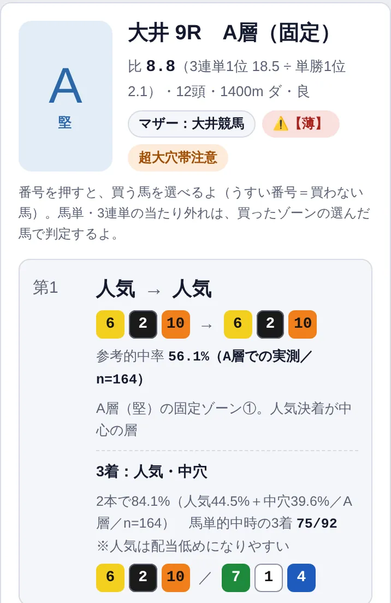
1234567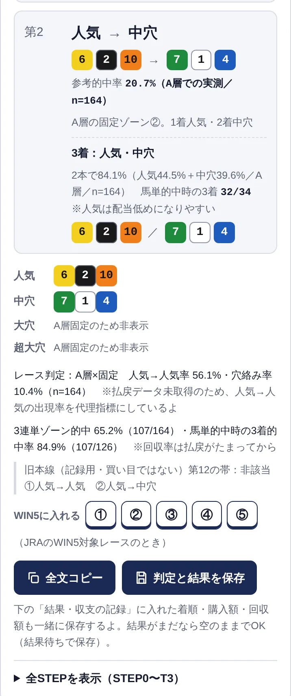
8910111213第13改訂版のはじめの設定だよ。設定の「買い目編集」で変えると、判定に「カスタム買い目」と出て、この表と変わるよ。
| 区分 | 馬単（1着→2着） | 3着 |
|---|---|---|
| A A層（固定） | ① 人気→人気 ② 人気→中穴 | 人気・中穴 |
| B B層（固定） | ① 中穴→人気 ② 人気→大穴 | 人気・大穴 暫定 |
| C C層・第1段階 | ① 人気→大穴 ② 中穴→中穴 暫定 ③ 大穴→人気 | ①③ 人気・中穴 ② 人気・大穴 暫定 |
| C C層・第2段階 | ① 人気→大穴／超大穴 ② 中穴→大穴／超大穴 ③ 大穴→人気 | ①③ 人気・中穴 ② 人気・超大穴 暫定 |
| C C層・非該当 | ① 人気→人気 ② 人気→中穴 | 見送り |
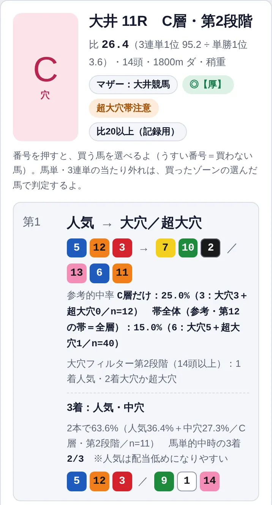
判定する（判定タブ）
ゾーンの番号を押すと、その馬を「買う／買わない」に切り替えられるよ。当たり外れは選んだ馬で決まるよ。
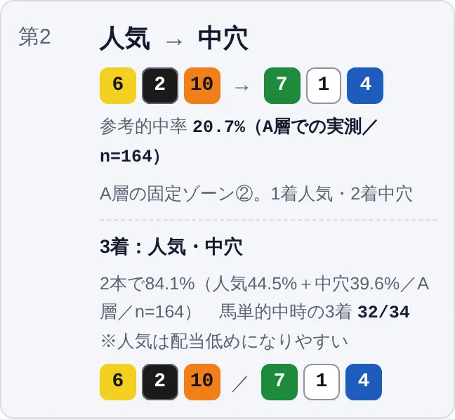
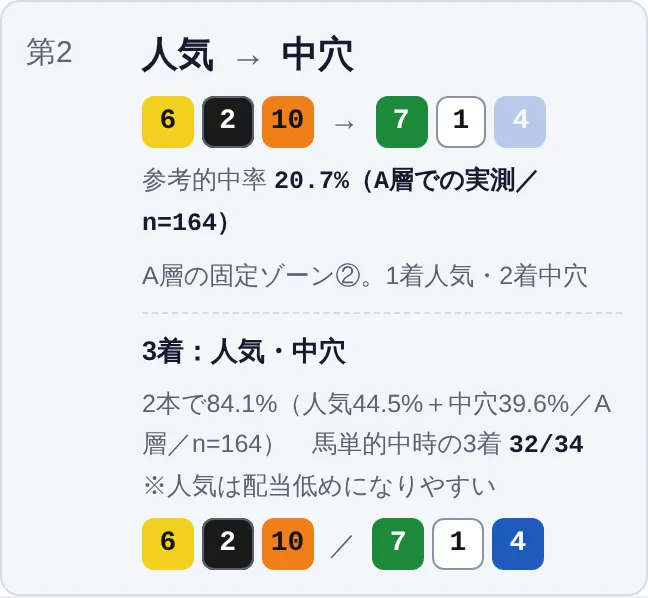
記録する
買った券種・金額・着順を入れて「判定と結果を保存」。当たり外れと収支は自動で出るよ。
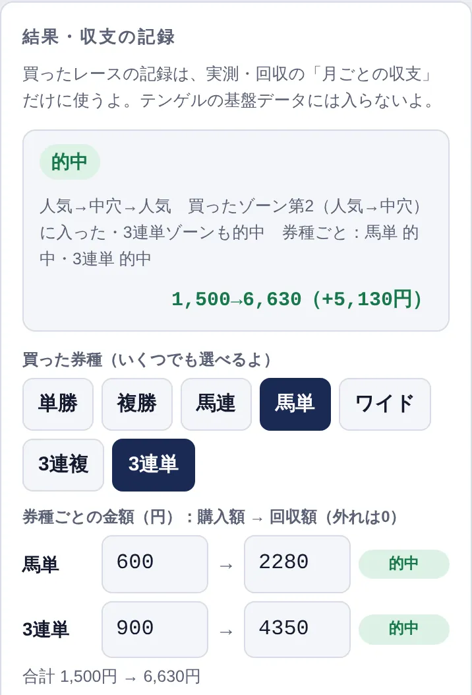
123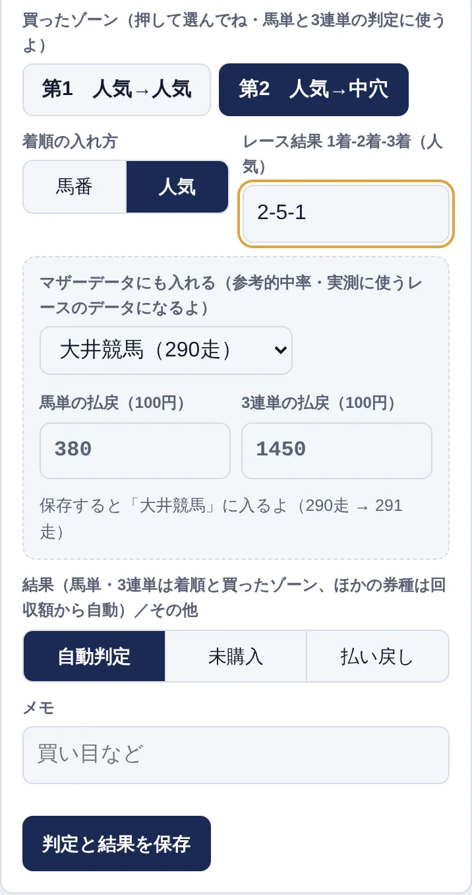
45678記録する
馬単・3連単は「買ったゾーン」と「選んだ馬」で、ほかの券種は回収額で決まるよ。どれか1つでも当たれば、そのレースは的中。
| 券種 | 的中になるとき |
|---|---|
| 馬単 | 1着・2着が、買ったゾーンの選んだ馬 |
| 3連単 | 馬単が的中して、3着もそのゾーンの3着（選んだ馬） |
| 単勝・複勝・馬連・ワイド・3連複 | 回収額が入っている（0なら不的中、空なら結果待ち） |
| レース全体 | どれか1つでも的中なら的中 |
A層のレースで、第2「人気→中穴」だけを馬単と3連単で買った。2着の6番人気（4番）は外した、とするよ。
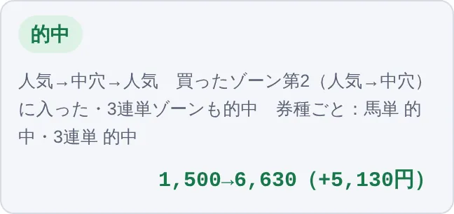
人気→中穴なので、買ったゾーン第2に入って的中。3着の1番人気も3着「人気・中穴」に入るから、3連単も的中だよ。
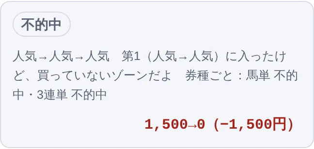
人気→人気なので第1には入ったけど、第1は買っていないゾーンだから不的中。
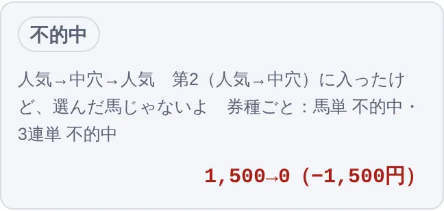
ゾーンは第2で合っているけど、2着の6番人気は外した馬だから不的中。
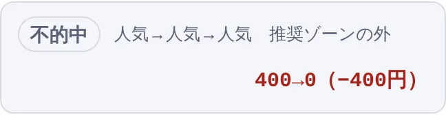
人気→人気はB層の推奨ゾーン（中穴→人気・人気→大穴）にないので「推奨ゾーンの外」。
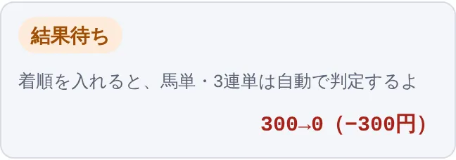
着順を入れると、自動で判定するよ。
前の記録（買ったゾーンを選ぶ機能ができる前のもの）は、推奨ゾーン全部で判定するよ。
記録する
保存したレースが日付ごとに並ぶよ。押すと開いて、直したり判定画面に戻したりできるよ。
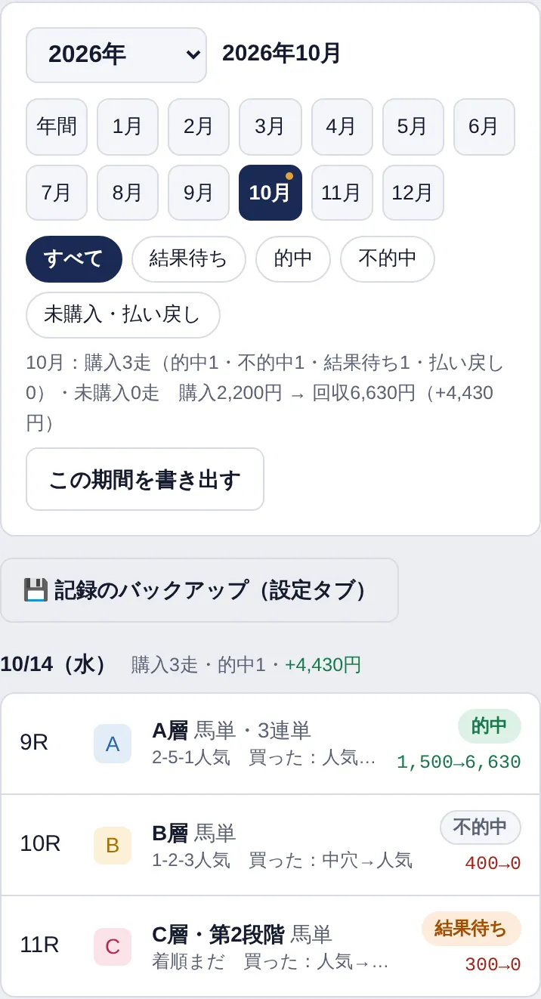
1234567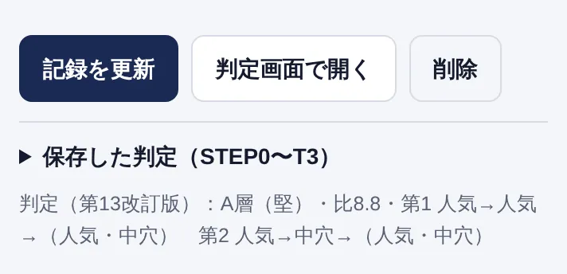
「購入額未入力」の印が出た行は、開いて購入額を入れてね。「マザー入り」の印は、マザーデータにも入ったレースだよ。WIN5の記録はWIN5タブにあるよ。
WIN5
5レースを判定画面で入れて、予算を入れるだけ。点数が予算に収まるように、買う馬を出してくれるよ。
WIN5は、JRAが指定する5レースの1着を全部当てる馬券。1点100円で、点数は5レースで選んだ頭数のかけ算だよ。
判定画面の下の「WIN5に入れる ①〜⑤」からも入れられるよ。
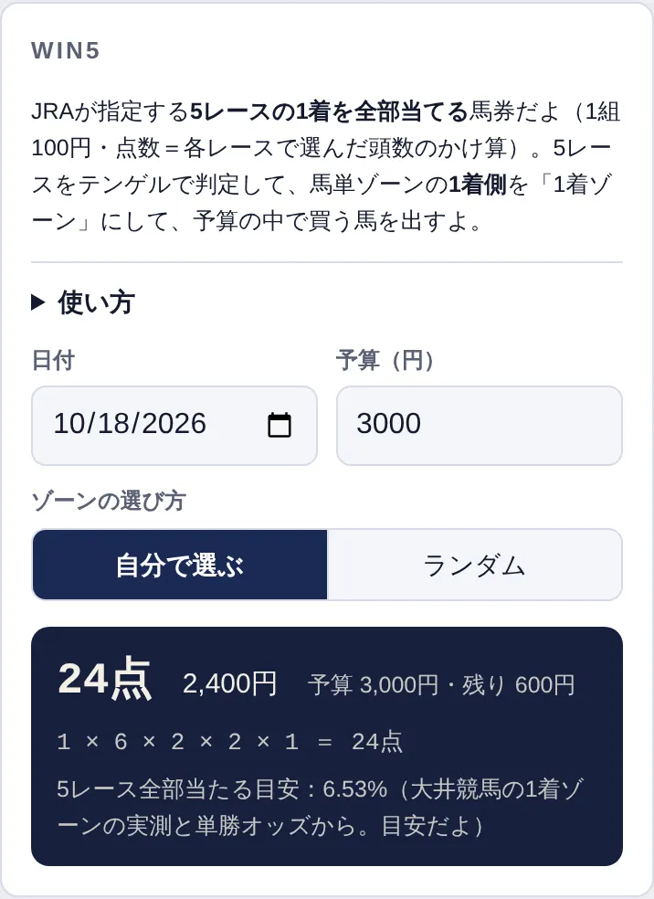
1234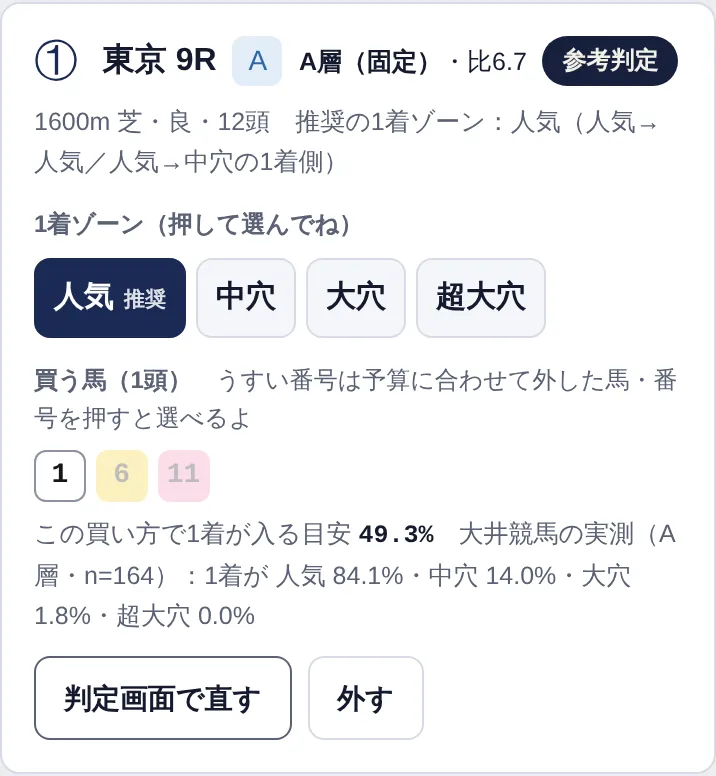
12345WIN5
レースが終わったら、各レースの1着の馬番を入れるだけ。○×と的中・不的中が出るよ。
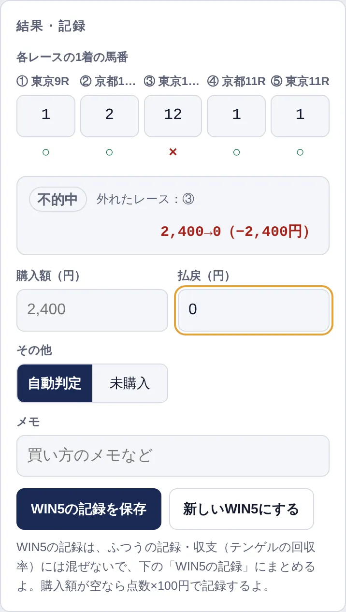
12345数字とデータ
上半分は自分の収支、下半分はマザーデータの実測①〜⑦だよ。2つは別のデータ。
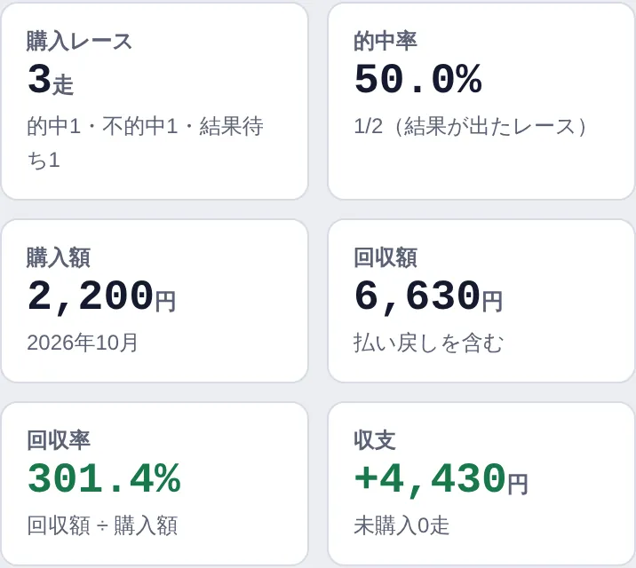
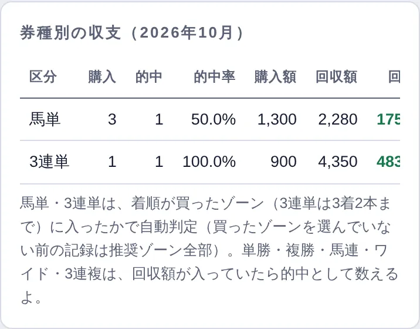
マザーデータと期間を選ぶと、そのデータで計算した表が出るよ。期間は 全期間・前半（7/20〜8/17）・後半（8/31〜10/3）・新規（10/4〜10/7）・第13新規（10/8〜）。
| 表 | 中身 |
|---|---|
| ① 層別実測 | 層ごとの走数・構成比・穴決着率・人気→人気率・本線の的中 |
| ② C層の比区分 | C層の比20以上／未満と1着超大穴（記録用） |
| ③ 推奨ゾーンの的中 | 区分×ゾーンごとの馬単・3着の的中。参考的中率のもと |
| ④ 区分ごとのレース判定 | 人気→人気率・穴絡み率と【薄】【並】【厚】 |
| ⑤ 方向ペア分布 | 1着ゾーン→2着ゾーンの出た数（全体・層ごと） |
| ⑥ 1・2着の人気頭数と3着 | 3着の決め方の根拠 |
| ⑦ 本線と旧本線 | 第13（本線）と第12（旧本線）の的中・回収率と、見直しの進み具合 |
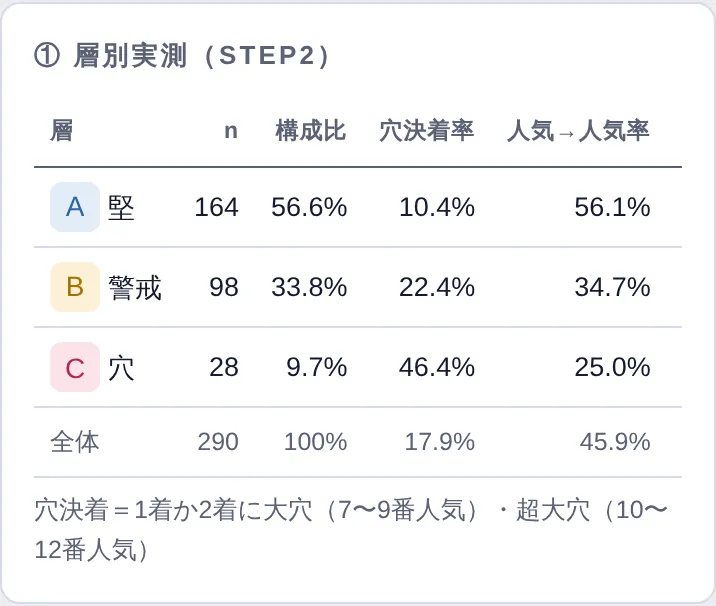
数字とデータ
参考的中率と実測①〜⑦を計算する「もと」のデータ。3つまで持てて、切り替えられるよ。
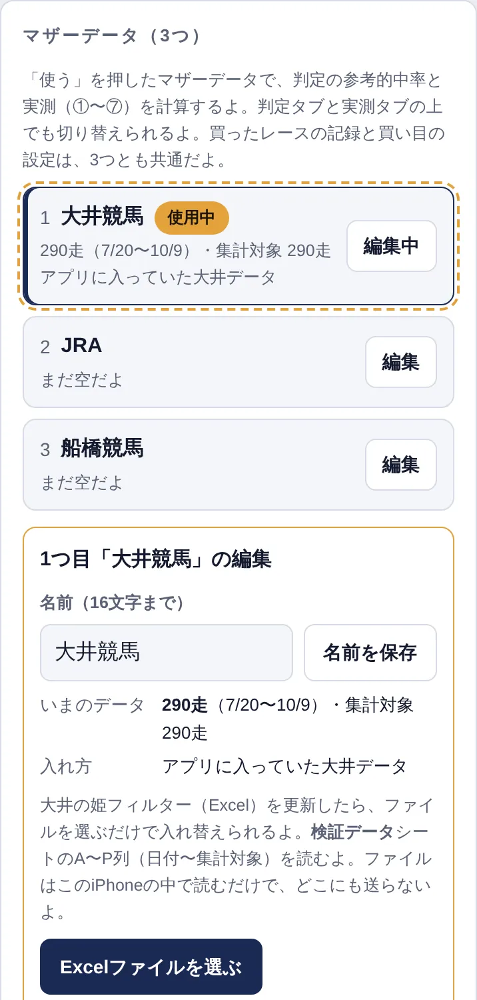
123数字とデータ
判定したレースに着順を入れて保存すると、マザーデータに1行入るよ。Excelがなくても、アプリの中だけでデータを増やせるよ。
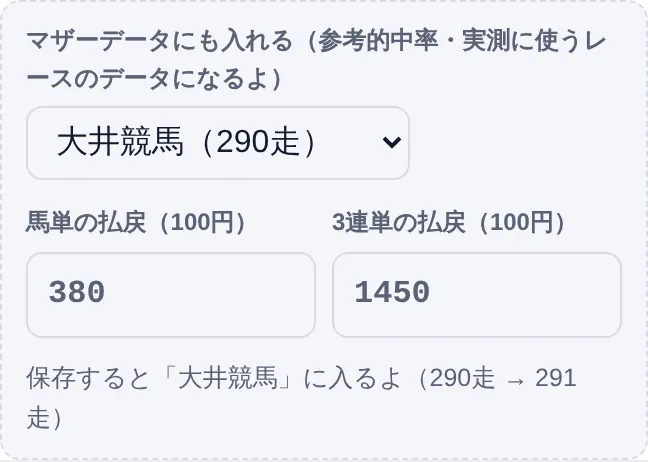
設定 → マザーデータ →編集の中にあるよ。
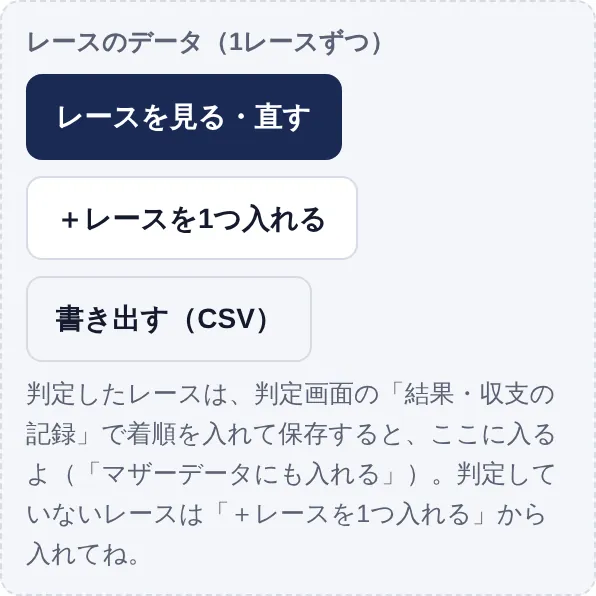
123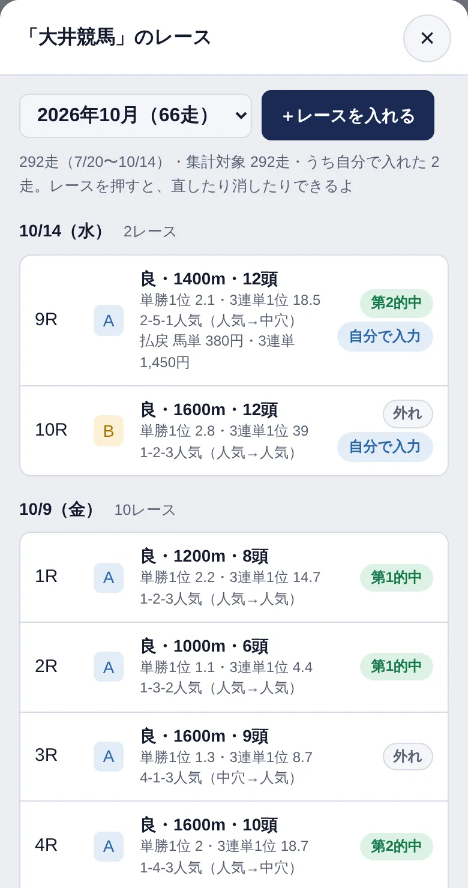
12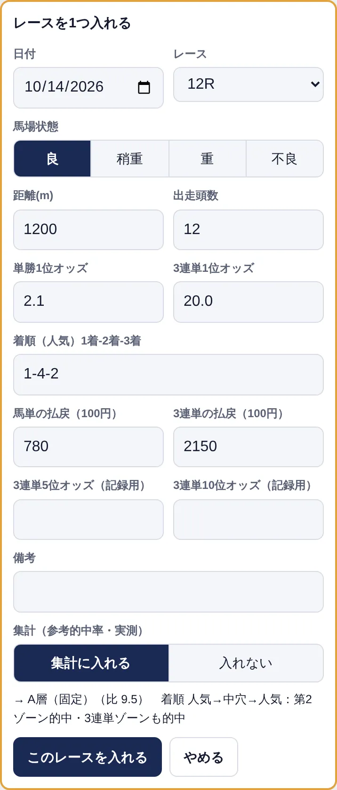
123456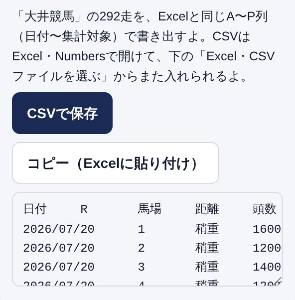
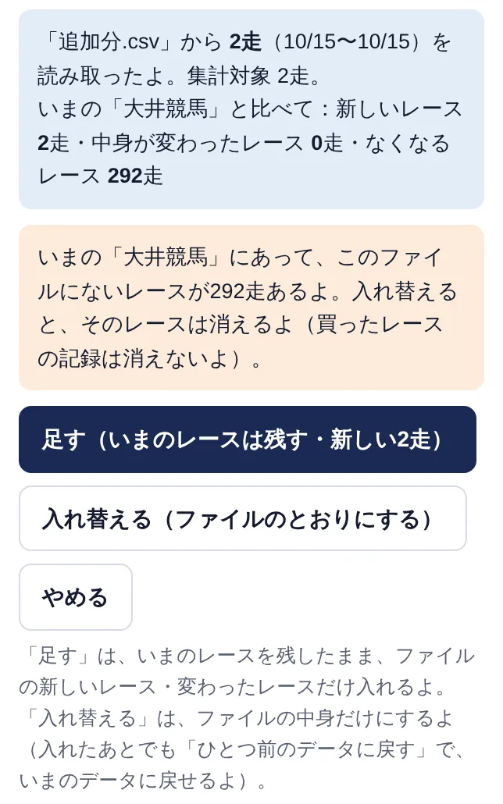
数字とデータ
新しいレースは、分析シートと分析表を姫に送るだけ。姫がアプリを新しくして、「更新する」で入るよ。
いまのアプリの大井データは 290走（7/20〜10/9）。
姫のチャットがアプリのGitHubにつながっていないときは、Excel（大井競馬_マザーデータ_アプリ用.xlsx）だけ返すよ。設定 → マザーデータ →「編集」→「Excelファイルを選ぶ」で入れてね。更新の記録は、Excelの「突合メモ」シートにあるよ。
設定
区分ごとに、馬単の1着→2着と3連単の3着を変えられるよ。はじめは第13改訂版のまま。
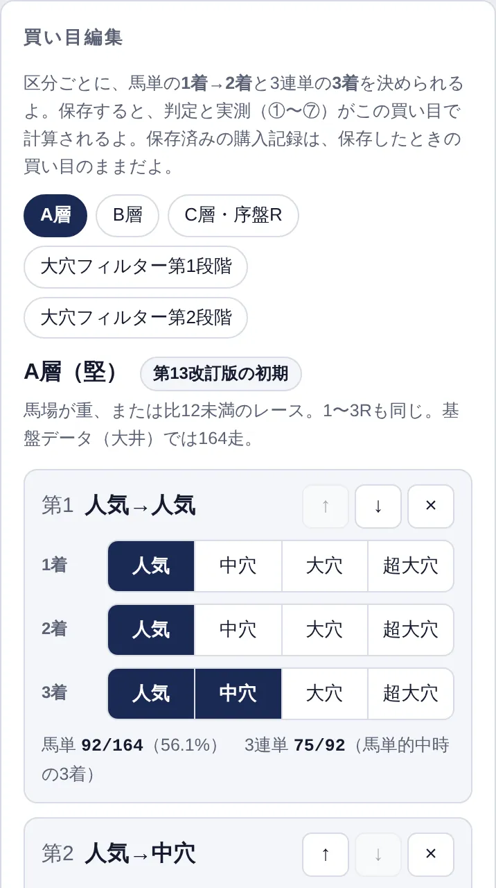
12345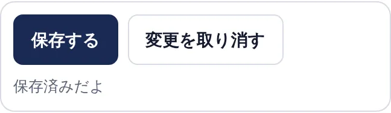
設定
画像の読み取りには、AnthropicのAPIキーが1回だけ必要だよ。5分くらいで作れるよ。
sk-ant-… をコピー（1回しか表示されないよ）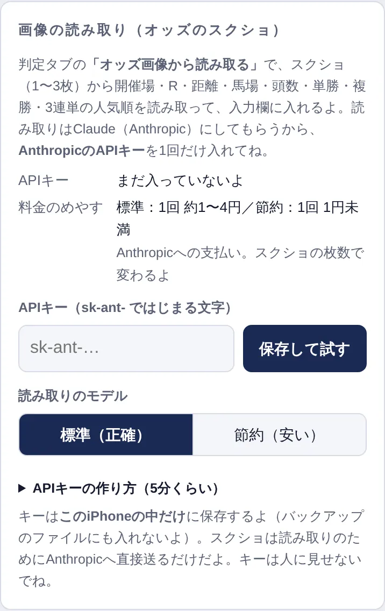
12設定
ときどき「バックアップを保存」しておけば、アイコンを消しても、機種変更しても戻せるよ。
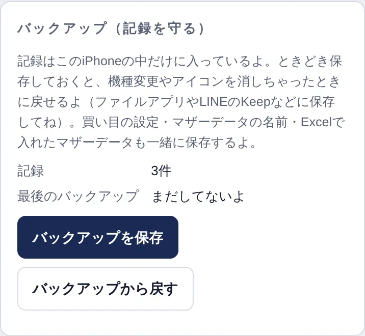
12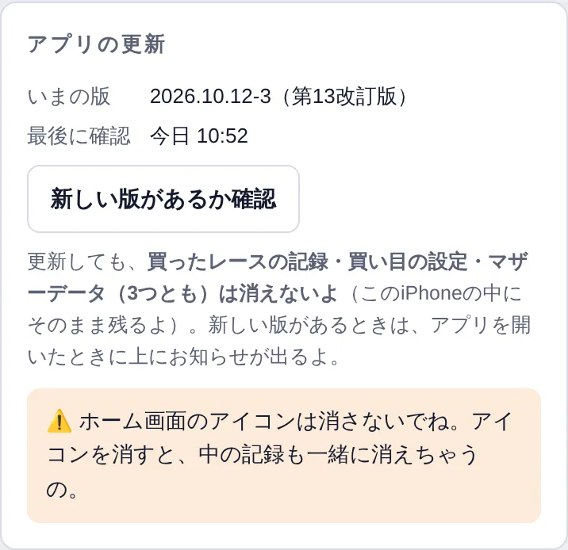
いまの版と、最後に確認した日時が出るよ。新しい版があるか確認→ あれば新しい版にする。
困ったとき・ことば
たいていは、画面に出たメッセージのとおりにすれば直るよ。押すと直し方が出るよ。
それでも直らないときは、画面のスクショを姫に送ってね。
困ったとき・ことば
アプリに出てくる言葉の意味だよ。ルールは「テンゲルシステムⅢ 第13改訂版」のとおり。
数字は単勝の人気順（オッズの低い順）。13番人気より下は対象外で、判定にも番号にも出ないよ。
上から順に見て、最初に当てはまった層になるよ。比＝3連単1位オッズ ÷ 単勝1位オッズ（小数第2位を四捨五入）。
A層とB層は、R番号・頭数に関係なく固定のゾーンだよ。
見つからなかったよ。ほかの言葉でさがしてね。